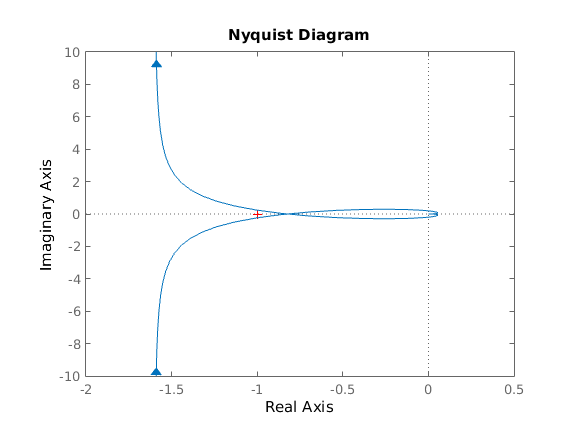

Exercise 1
- Lab 03
- Author: Riccardo Cappuzzo
- 2015-05-17
Contents
Initialization of functions
clc;
clear all, close all;
s = tf('s');
C = -0.5;
G = -(1-s)/(s*(1+s)^2*(1+s/5));
L = zpk(minreal(G*C));
T = L/(1+L);
Evaluation of the poles of T
pT = pole(T);
Nyquist stability criterion
- determine the number P of poles of L(s) with positive real part
- draw the nyq diagram of L(s)
- compute the number N of encirclements of the nyq diagram of L around the critical point (-1, j0)
- compute the number Z of the closed loop poles with positive real part as Z = N + P The system is stable iff Z=0
p = pole (L);
P = length (find (p>0));
figure, nyquist (L);
N = 0;
Z = N+P;
